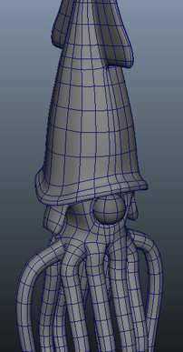

Current Projects: This Website's Renovation and the 3D Squid Above
Art:The creative use of raw materials or any other kind of medium to express one's self, ideas and feelings, or represent something real or fictional.